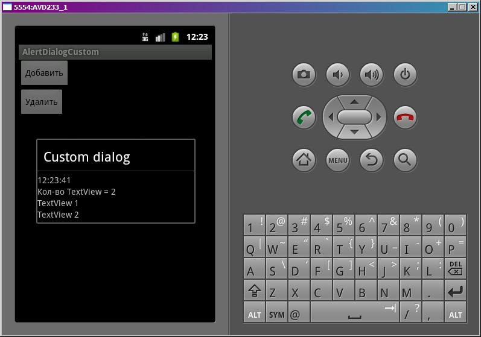
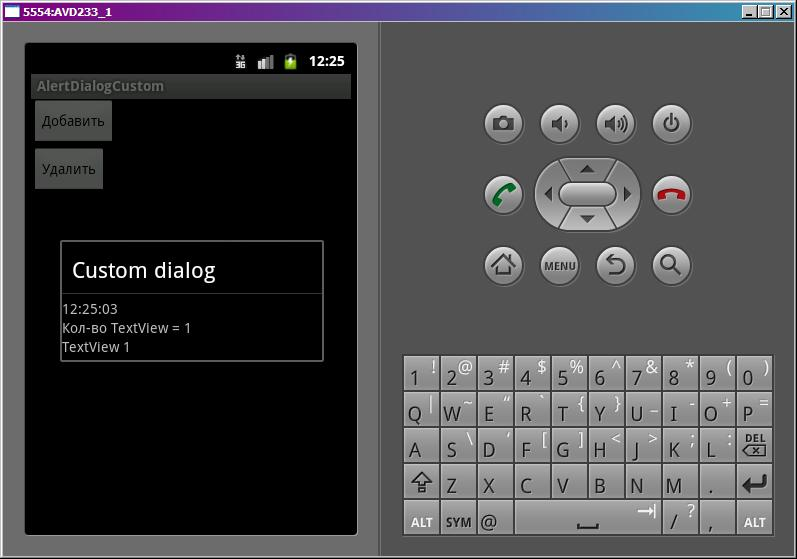

В этом уроке:
- используем свои View для построения диалога
Кроме сообщения или списка мы можем помещать в диалог свои View-компоненты. Для этого доступно как основное тело диалога, так и заголовок. Для этого нам необходимо создать View и с помощью методов setCustomTitle или setView вставить этот View соответственно в заголовок или тело диалога. Я буду использовать только setView и работать с телом диалога. Использование метода setCustomTitle и работа с заголовком диалога полностью аналогична.
Нарисуем приложение, которое будет использовать свой View-компонент в теле диалога и рассмотрим, как можно модифицировать содержимое этого компонента. Будем добавлять и удалять TextView в теле диалога.
Создадим проект:
Project name: P0651_AlertDialogCustom
Build Target: Android 4.0
Application name: AlertDialogCustom
Package name: ru.startandroid.develop.p0651alertdialogcustom
Create Activity: MainActivity
В strings.xml пропишем тексты:
<?xml version="1.0" encoding="utf-8"?>
<resources>
<string name="app_name">AlertDialogCustom</string>
<string name="add">Добавить</string>
<string name="remove">Удалить</string>
</resources>main.xml – экран с двумя кнопками для удаления и добавления элементов в диалог
<?xml version="1.0" encoding="utf-8"?>
<LinearLayout
xmlns:android="http://schemas.android.com/apk/res/android"
android:layout_width="fill_parent"
android:layout_height="fill_parent"
android:orientation="vertical">
<Button
android:id="@+id/btnAdd"
android:layout_width="wrap_content"
android:layout_height="wrap_content"
android:text="@string/add"
android:onClick="onclick">
</Button>
<Button
android:id="@+id/btnRemove"
android:layout_width="wrap_content"
android:layout_height="wrap_content"
android:text="@string/remove"
android:onClick="onclick">
</Button>
</LinearLayout>dialog.xml – наше будущее кастом-тело диалога.
<?xml version="1.0" encoding="utf-8"?>
<LinearLayout
xmlns:android="http://schemas.android.com/apk/res/android"
android:layout_width="match_parent"
android:layout_height="match_parent"
android:orientation="vertical">
<TextView
android:id="@+id/tvTime"
android:layout_width="wrap_content"
android:layout_height="wrap_content"
android:text="">
</TextView>
<TextView
android:id="@+id/tvCount"
android:layout_width="wrap_content"
android:layout_height="wrap_content"
android:text="">
</TextView>
</LinearLayout>В tvTime- будем отображать текущее время, а в tvCount – кол-во добавленных TextView.
MainActivity.java:
package ru.startandroid.develop.p0651alertdialogcustom;
import java.sql.Date;
import java.text.SimpleDateFormat;
import java.util.ArrayList;
import android.app.Activity;
import android.app.AlertDialog;
import android.app.Dialog;
import android.os.Bundle;
import android.view.View;
import android.view.ViewGroup.LayoutParams;
import android.widget.LinearLayout;
import android.widget.TextView;
public class MainActivity extends Activity {
final int DIALOG = 1;
int btn;
LinearLayout view;
SimpleDateFormat sdf = new SimpleDateFormat("HH:mm:ss");
TextView tvCount;
ArrayList<TextView> textViews;
/** Called when the activity is first created. */
@Override
public void onCreate(Bundle savedInstanceState) {
super.onCreate(savedInstanceState);
setContentView(R.layout.main);
textViews = new ArrayList<TextView>(10);
}
public void onclick(View v) {
btn = v.getId();
showDialog(DIALOG);
}
@Override
protected Dialog onCreateDialog(int id) {
AlertDialog.Builder adb = new AlertDialog.Builder(this);
adb.setTitle("Custom dialog");
// создаем view из dialog.xml
view = (LinearLayout) getLayoutInflater()
.inflate(R.layout.dialog, null);
// устанавливаем ее, как содержимое тела диалога
adb.setView(view);
// находим TexView для отображения кол-ва
tvCount = (TextView) view.findViewById(R.id.tvCount);
return adb.create();
}
@Override
protected void onPrepareDialog(int id, Dialog dialog) {
super.onPrepareDialog(id, dialog);
if (id == DIALOG) {
// Находим TextView для отображения времени и показываем текущее
// время
TextView tvTime = (TextView) dialog.getWindow().findViewById(
R.id.tvTime);
tvTime.setText(sdf.format(new Date(System.currentTimeMillis())));
// если была нажата кнопка Добавить
if (btn == R.id.btnAdd) {
// создаем новое TextView, добавляем в диалог, указываем текст
TextView tv = new TextView(this);
view.addView(tv, new LayoutParams(LayoutParams.MATCH_PARENT,
LayoutParams.WRAP_CONTENT));
tv.setText("TextView " + (textViews.size() + 1));
// добавляем новое TextView в коллекцию
textViews.add(tv);
// иначе
} else {
// если коллекция созданных TextView непуста
if (textViews.size() > 0) {
// находим в коллекции последний TextView
TextView tv = textViews.get(textViews.size() - 1);
// удаляем из диалога
view.removeView(tv);
// удаляем из коллекции
textViews.remove(tv);
}
}
// обновляем счетчик
tvCount.setText("Кол-во TextView = " + textViews.size());
}
}
}Рассмотрим код. В методе onCreate выполняем стандартные процедуры и создаем коллекцию textViews для хранения добавляемых TextView.
Метод onclick – обработчик нажатий на кнопки, сохраняет в btn идентификатор нажатой кнопки и показывает диалог.
В методе создания диалога onCreateDialog мы задаем текст заголовка диалога, создаем view из layout-файла dialog.xml и с помощью метода setView говорим диалогу, что надо использовать наше view в качестве тела диалога. И теперь, работая с view, мы будем формировать тело диалога. В только что созданном view сразу находим tvCount – для отображения кол-ва добавленных TextView.
Метод onPrepareDialog – здесь мы с помощью метода getWindow получаем доступ к View-компонентам диалога, находим среди них tvTime и показываем в нем время. Далее определяем, какая кнопка была нажата. Если кнопка добавления, то создаем TextView и помещаем его в view (который определили в методе onCreateDialog) и добавляем в коллекцию textViews. Таким образом TextView добавится в тело диалога. Если же хотим удалить TextView, то находим в коллекции последний добавленный и удаляем его из компонента view и из коллекции textViews. В конце обновляем счетчик кол-ва добавленных TextView в диалоге.
Обратите внимание, что я использую два разных способа для получения доступа к tvCount и tvTime. tvCount я нашел сразу после создания view в методе onCreateDialog. А в случае с tvTime я показываю, как найти View-компонент в диалоге без использования объекта view. Какой вам удобнее по ситуации, тот и используйте.
Все сохраним и запустим приложение. Нажмем кнопку Добавить
Появился диалог. Отображает время, кол-во добавленных TextView и собственно сами добавленные TextView.
Закрываем диалог кнопкой Назад, жмем еще раз добавить

Добавилось еще одно TextView.
Закрываем диалог, жмем кнопку Удалить.

Последнее TextView удалилось.